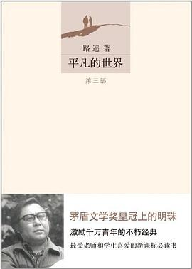

|  |
作者: 路遥 出版社: 北京十月文艺出版社 出版年: 2012-3-1 页数: 1251 定价: CNY 79.80 装帧: 平装 ISBN: 9787530212004 |
豆瓣评分 9.0 58035人评价 5星68.7% 4星24.9% 3星5.1% 2星0.9% 1星0.5% |
《平凡的世界》是一部现实主义小说，也是小说化的家族史。 作家高度浓缩了中国西北农村的历史变迁过程，作品达到了思想性与艺术性 的高度统一，特别是主人公面对困境艰苦奋斗的精神，对今天的大学生朋友仍有 启迪。这是一部全景式地表现中国当代城乡社会生活的长篇小说。《平凡的 世界(套装共3册)》共三部。作者在近十年问广阔背景上，通过复杂的矛盾纠葛， 刻画了社会各阶层众多普通人的形象。劳动与爱情，挫折与追求，痛苦与欢乐， 日常生活与巨大社会冲突，纷繁地交织在一起，深刻地展示了普通人 在大时代历史进程中所走过的艰难曲折的道路。
路遥（1949-1992），原名王卫国，1949年12月3日生于陕西榆林市清涧县一个贫困的 农民家庭，因家贫7岁即过继给延川县农村的伯父。曾在延川县立中学学习，1969年回 乡务农。其间做过许多临时性工作，并在农村一小学教书一年。1973年进入延安大学中 文系学习，开始文学创作。大学毕业后，任《陕西文艺》（今为《延河》）编辑。 1980年发表《惊心动魄的一幕》，获第一届全国优秀中篇小说奖。1982年发表中篇小说 《人生》，获第二届全国优秀中篇小说奖。1988年完成百万字长篇巨著《平凡的世界》， 于1991年获茅盾文学奖。1992年11月17日上午8时20分，路遥因病医治无效在西安逝世， 年仅42岁。
《平凡的世界》是从1975年开始创作的，小说手稿原名为《普通人的道路》 。而20世纪80年代中后期的文化背景是各种文学新思潮风起云涌，现代派、意识流等文学观念风靡一时， 文学创作在形式和技巧上的求变求新令人目不暇接。与此相反，传统现实主义创作却受到“冷落” 。甚至有批评家认为，路遥的另一部小说《人生》的现实主义创作手法是落伍的，但路遥仍然坚持创作完成 了这部小说。路遥三年准备、三年创作，为了扩充视野、掌握资料，他进行了大量的阅读， 包括近百部长篇小说，前后近十年的报纸以及其他相关书籍，过着“早晨从中午开始”的生活， 同时，他还奔波于社会各阶层体验生活。第一部初稿的写作是在一个偏僻的煤矿医院开始的， 从他的创作随笔《早晨从中午开始》可以看到他对文学事业执着的信心和付出的代价： “写作整个地进入狂热状态。身体几乎不存在；生命似乎就是一种纯粹的精神形式， 日常生活变为机器人性质”。第二部初稿的写作是在黄土高原腹地的一个偏僻小县城进行的， 因为生活没有规律，路遥身体严重透支，最后病倒了。后来吃了百余副汤药，身体略有恢复， 他依靠一股精神力量，继续写作。第三部的初稿改在榆林宾馆进行。1988年5月25日，路遥终于完成了 《平凡的世界》的全部创作。
1.小时候，我们常常把‘亲戚’这两个字看得多么美好和重要。一旦长大成人，开始独立生活， 我们便很快知道，亲戚关系常常是庸俗的；互相设法沾光，沾不上光就翻白眼； 甚至你生活中最大的困难也常常是亲戚们造成的；生活同样也会告诉你， 亲戚往往不如朋友对你真诚。见鬼去吧，亲戚！
—— 引自第129页
2.这黄土地上养育出来的人，尽管穿戴土俗，文化粗浅，但精人能人如同天上的星星一般稠密。
—— 引自第238页
3.当然，普通并不代表庸俗。他也许一辈子就是个普通人，但他要做一个不平庸的人。 在许许多多的平平常常的事情中，应该表现出不平常的看法和做法来。……在最平常的 事情中都可以显示出一个人人格的伟大来。
—— 引自第1页
Copyright-© 2020-2021 Binger